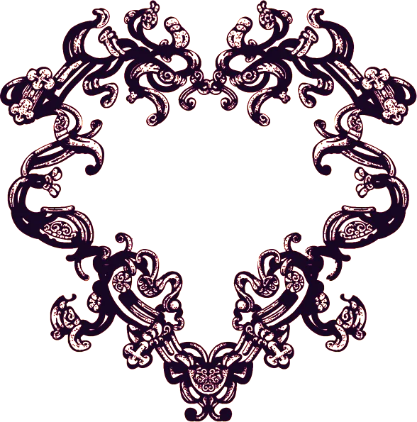
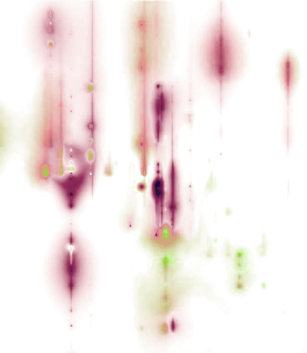
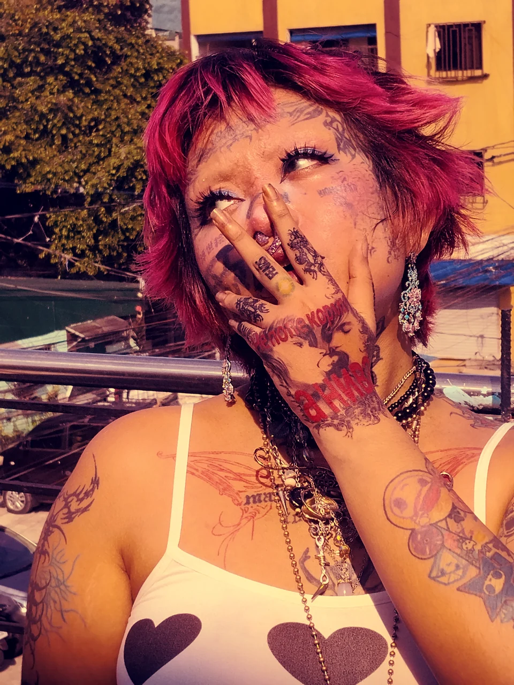
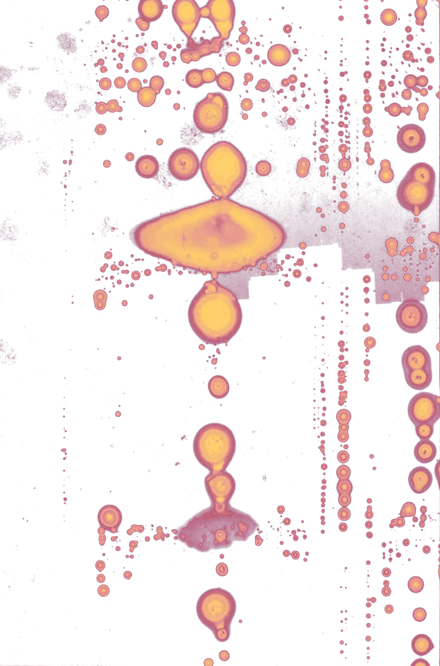
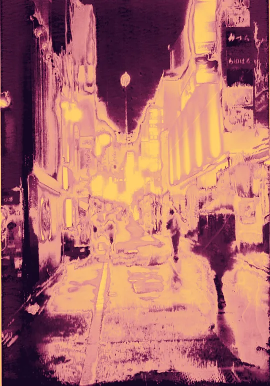

G.H. is a name loaned from the titular narrator of Clarice Lispector’s novella, “The Passion, According to G.H.” The book is ensconced in what is leavened by Julia Kristeva in 1980, her psychoanalytic theory of ‘Abjection’ in her seminal work, “Powers of Horror”. Mosseri—“of Moses”, patrilineal surname—is borrowed from the heretic’s own experience of escape as a larger existential mechanism that serves as one’s prerogative “right to leave.”


The question remains as to the ordeal, a secular one this time, that abjection can constitute for someone who, in what is termed knowledge of castration, turning away from perverse dodges, presents himself with his own body and ego as the most precious non-objects; they are no longer seen in their own right but forfeited, abject. The termination of analysis can lead us there, as we shall see. Such are the pangs and delights of masochism.

- Name
- G.H. Mosseri
- Age
- 22
- Nationality
- Filipino
Art Abolitionist.
II. — About the Artist
The Heretic
I / VII
- Based in Malabon City
- Mediums Digital, Traditional, Multimedia
- Featured in Novice Magazine, Issue #4 · WriteTheWorld Alumni Feature Blog · TV5 Dokumentado


The Alleyway
what you’ll find in the eskinita between the church and a commercial district: the strewn eyelashes, the 25 centavos, hardened tutong rice, fractured rosaries, temporary portals to salvation as you pee conspicuously on the sidewalk.
Graphic Art


Digital Art
 VII. Genji · Digital illustration
VII. Genji · Digital illustration VIII. Aponia · Digital illustration
VIII. Aponia · Digital illustration IX. Because Your Lips are Yours, I Forgive Their Cruel Joke · Digital illustration
IX. Because Your Lips are Yours, I Forgive Their Cruel Joke · Digital illustration X. The Rape of Melchora · Digital illustration
X. The Rape of Melchora · Digital illustration XI. The Satyress and the Shepherd (V1) · Digital illustration
XI. The Satyress and the Shepherd (V1) · Digital illustration XII. Persephone · Digital illustration
XII. Persephone · Digital illustration XIII. Portrait of an Unassuming Mermaid · Digital illustration
XIII. Portrait of an Unassuming Mermaid · Digital illustration XIV. The Sun and the Moon: Two Households, Both Alike in Dignity · Digital illustration
XIV. The Sun and the Moon: Two Households, Both Alike in Dignity · Digital illustration
Multimedia
-
XV. LUBLUBAN: Binyag Ng Halimaw · Short film trailerWatch on Facebook ↗
-
XVI. Spiracle · VideoWatch on Facebook ↗
-
XVII. Gangsta of the Mass Awakening · VideoWatch on Facebook ↗
-
XVIII. Flicks — Frou Frou · ReelWatch on Facebook ↗
-
XIX. The Imminence of Beauty Rots in the Chest of a Daughter · VideoWatch on Facebook ↗


IV. — Creative Writing
Bottles at Sea
confessions to no one. devotion to the pundit’s body adrift on flotsam; cosmogyral, whirling around the universe, beyond God, beyond science—beyond witness.
Taf. IVFlaschenpost — Bottles at Seafig. 1–11
-
 No. 01 —
No. 01 —The Lovers: 124⁰ Sun Opposition Venus
“wetness is a loan word of mermaid gingiva.”
Uncork → -

-

-
-
No. 05 —
Anagolay
“sampaguita strings link my teeth, together, gurgling mysteries in oil spills.”
Uncork → -
No. 06 —
how many grams of protein are in the tears of my father's shirt?
“refining the posture of my fingertips, so they look less like my mother’s.”
Uncork → -
-
-
No. 09 —
April Showers are Small, Diminutive
“mercy-tongues slippery enough for San Antonio’s shower blessing.”
Uncork → -
-
No. 11 —
god(girl)hood, and the things that help me sleep
“i want to be buried without your name falling from my lips because it would mean that you were big enough to be a truth i died for.”
Uncork →
Monsorium Konv.-Lexikon, 1. Aufl.Writing set adriftZum Artikel ›Bottles at Sea‹

You are Here, Spilling Old Oceans for Me.
V. — Contact
Conches
Hold one to your ear. For commissions, use the form below; for anything else, write or message directly.
- 加扎勒 a naraka for the tender.
- @ghmosseri
© MMXXVI Monsorium — all bodies reserved
Thank you — your commission request is on its way.